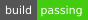

Vundle:
Plugin 'fatih/vim-go'
https://github.com/fatih/vim-go
vim-go 
Features
This plugin adds Go language support for Vim, with the following main features:
- Compile your package with :GoBuild, install it with :GoInstall or test it with :GoTest. Run a single tests with :GoTestFunc).
- Quickly execute your current file(s) with :GoRun.
- Improved syntax highlighting and folding.
- Completion support via gocode.
- gofmt or goimports on save keeps the cursor position and undo history.
- Go to symbol/declaration with :GoDef.
- Look up documentation with :GoDoc or :GoDocBrowser.
- Easily import packages via :GoImport, remove them via :GoDrop.
- Automatic GOPATH detection which works with gb and godep. Change or display GOPATH with :GoPath.
- See which code is covered by tests with :GoCoverage.
- Add or remove tags on struct fields with :GoAddTags and :GoRemoveTags.
- Call gometalinter with :GoMetaLinter to invoke all possible linters (golint, vet, errcheck, deadcode, etc.) and put the result in the quickfix or location list.
- Lint your code with :GoLint, run your code through :GoVet to catch static errors, or make sure errors are checked with :GoErrCheck.
- Advanced source analysis tools utilizing guru, such as :GoImplements, :GoCallees, and :GoReferrers.
- Precise type-safe renaming of identifiers with :GoRename.
- ... and many more! Please see doc/vim-go.txt for more information.
Install
Master branch is a development branch. Please use with caution. I recommend to use the latest stable release
Vim-go follows the standard runtime path structure. Below are some helper lines for popular package managers:
- Vim 8 packages
- git clone https://github.com/fatih/vim-go.git ~/.vim/pack/plugins/start/vim-go
- Pathogen
- git clone https://github.com/fatih/vim-go.git ~/.vim/bundle/vim-go
- vim-plug
You will also need to install all necessary binaries. We have a handy command for it: :GoInstallBinaries.
Check out the "Install" section in the documentation for more detailed instructions (:help go-install).
Usage
The full documentation can be found at doc/vim-go.txt. You can display it from within Vim with :help vim-go.
You may have to generate the plugin's help tags manually (e.g. :helptags ALL) depending on your installation method.
We also have an official vim-go tutorial.
License
The BSD 3-Clause License - see LICENSE for more details